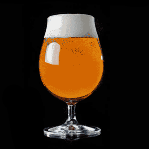

India Pale Ale
English and American examples differ due to the ingredients used, particularly the hop varieties.
Although malt flavors are often present and offer balance, IPAs are a true celebration of hop aroma, flavor and bitterness.
Newly developed hop varieties continue to bring exciting new flavors to this style, proving that bitter is beautiful.

Imperial IPA / IIPA
American craft beer lovers thirst for more flavour led them to the IIPA.
Stronger and hoppier flavour, aroma and bitterness.

New England IPA / NEIPA
Emphasising hop aroma and flavour without bracing bitterness.
Leaning heavily on late dry-hopping to deliver a juicy, tropical hop experience.

American IPA
Characterised by floral, fruity, citrus-like, piney or resinous American-variety hop character,
the IPA style is all about hop flavour, aroma and bitterness.